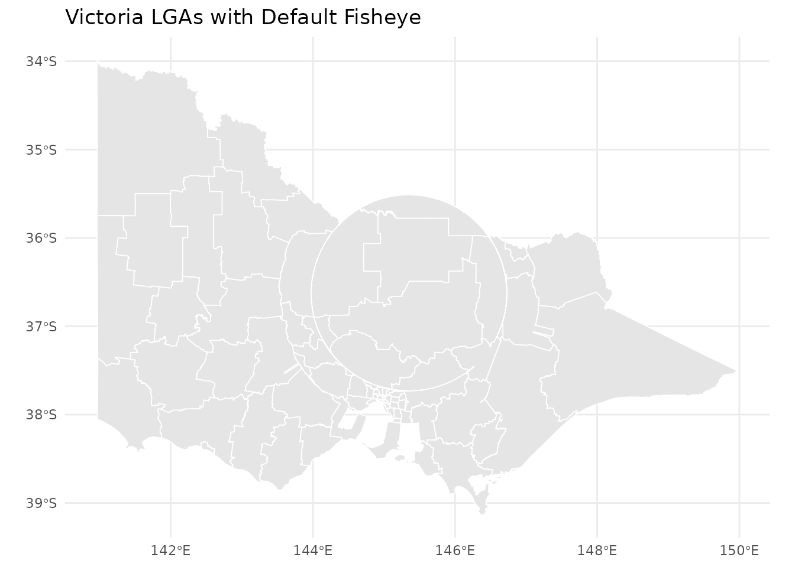
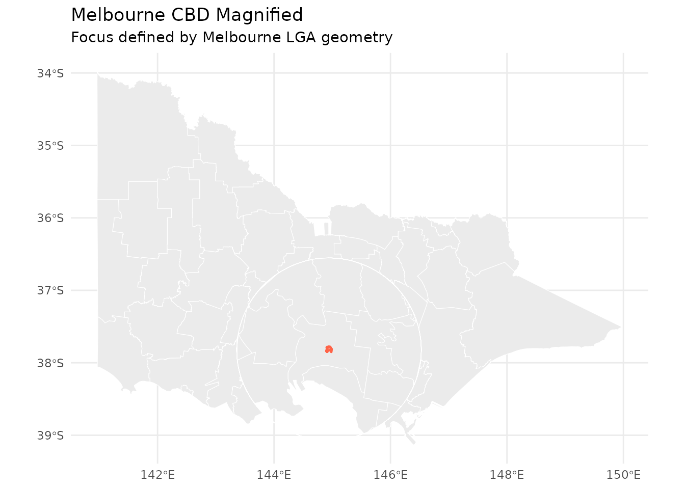
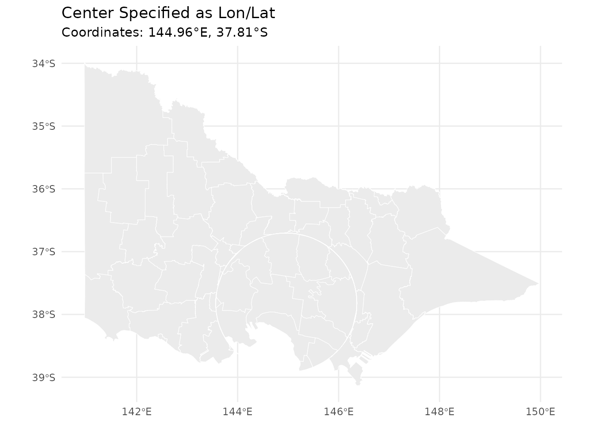
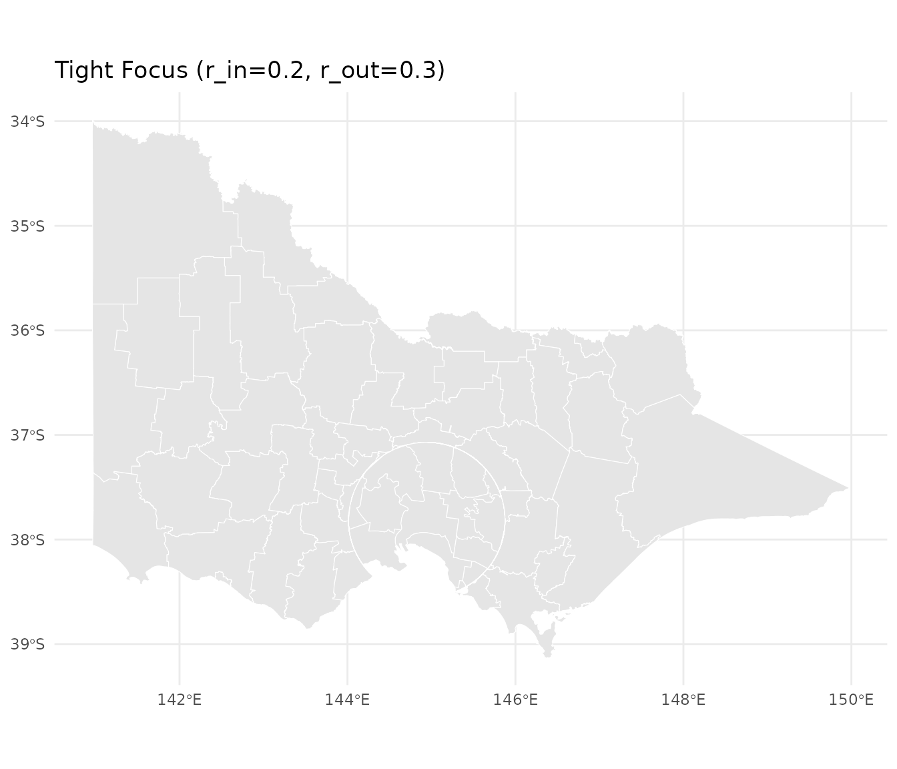
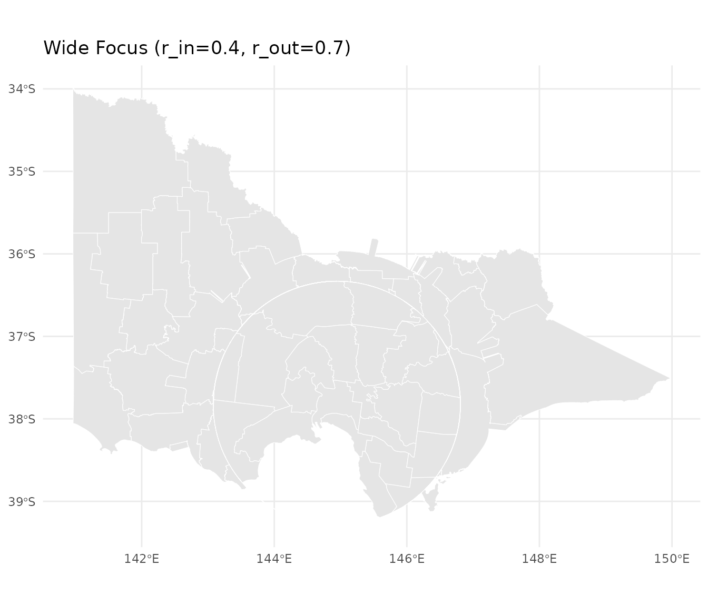
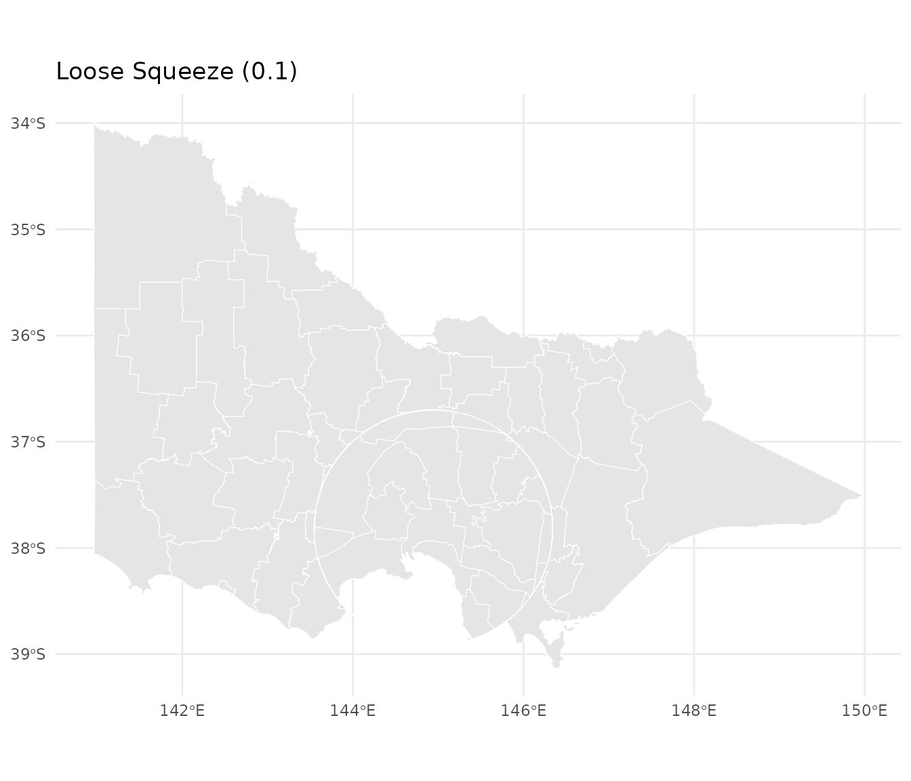
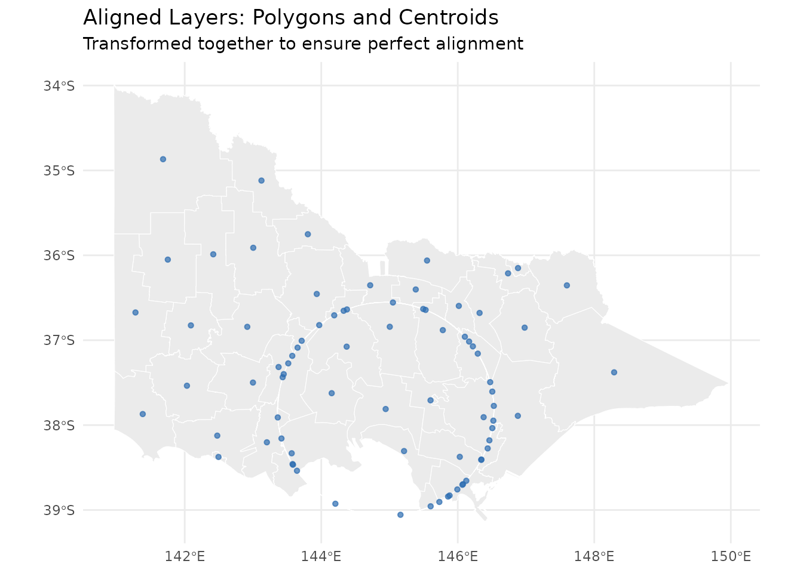
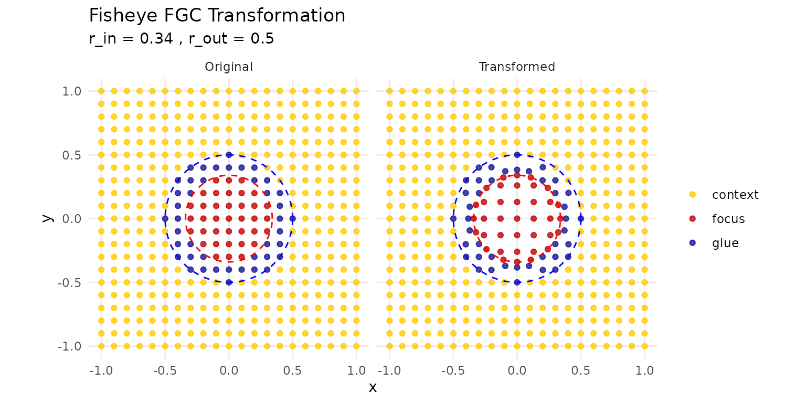
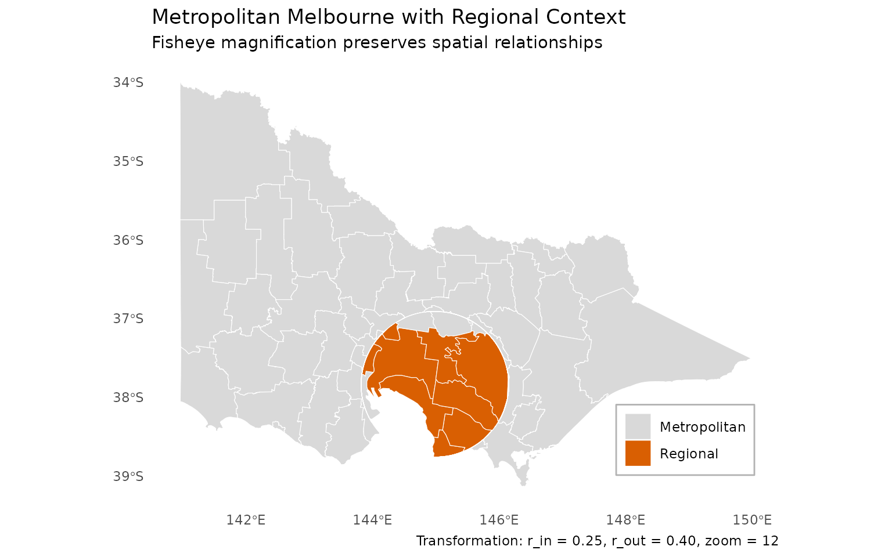

Getting Started with mapycusmaximus
Source:vignettes/mapycusmaximus-vignette.Rmd
mapycusmaximus-vignette.RmdIntroduction
mapycusmaximus brings fisheye transformations to R’s
spatial ecosystem. Just as ggplot2 transforms how we
visualize data and dplyr transforms how we manipulate it,
mapycusmaximus transforms how we view geographic space—allowing you to
magnify local detail while preserving regional context.
The package implements the Focus-Glue-Context (FGC) model, a three-zone radial transformation that:
- Magnifies features in the focus region (like zooming in)
- Smoothly transitions through the glue zone (preventing jarring distortions)
- Preserves the outer context (maintaining geographic orientation)
This vignette will show you how to use mapycusmaximus with real spatial data, following tidyverse principles of working with data.
library(mapycusmaximus)
library(sf)
library(ggplot2)
# Use a minimal theme for clean visualizations
theme_set(theme_minimal())Your First Fisheye
Let’s start with the built-in Victoria LGA dataset. The goal is to magnify Melbourne while keeping the rest of Victoria visible.
# Examine the data
data(vic)
vic
#> Simple feature collection with 79 features and 1 field
#> Geometry type: MULTIPOLYGON
#> Dimension: XY
#> Bounding box: xmin: 140.9619 ymin: -39.13442 xmax: 149.9762 ymax: -33.98064
#> Geodetic CRS: WGS 84
#> First 10 features:
#> LGA_NAME geometry
#> 1 ALPINE MULTIPOLYGON (((146.7238 -3...
#> 2 ARARAT MULTIPOLYGON (((143.0904 -3...
#> 3 BALLARAT MULTIPOLYGON (((143.9239 -3...
#> 4 BANYULE MULTIPOLYGON (((145.1342 -3...
#> 5 BASS COAST MULTIPOLYGON (((145.3214 -3...
#> 6 BAW BAW MULTIPOLYGON (((145.7643 -3...
#> 7 BAYSIDE MULTIPOLYGON (((144.986 -37...
#> 8 BENALLA MULTIPOLYGON (((146.1131 -3...
#> 9 BOROONDARA MULTIPOLYGON (((145.1039 -3...
#> 10 BRIMBANK MULTIPOLYGON (((144.8829 -3...The simplest fisheye uses defaults and automatically determines the center:
# Apply fisheye transformation
vic_warped <- sf_fisheye(
vic,
r_in = 0.3, # Focus radius
r_out = 0.6, # Glue boundary
zoom_factor = 2, # Magnification strength
squeeze_factor = 0.35
)
# Visualize with ggplot2
ggplot(vic_warped) +
geom_sf(fill = "grey90", color = "white", linewidth = 0.3) +
labs(title = "Victoria LGAs with Default Fisheye")
A basic fisheye transformation of Victoria’s LGAs
That’s it! But to really control the transformation, you’ll want to specify a focus point.
Specifying the Focus Point
The fisheye center determines what gets magnified. There are several ways to specify it:
Using a Geometry
The most natural approach—pass an sf object and
mapycusmaximus uses its centroid:
# Extract Melbourne CBD as the focus
melbourne <- vic[vic$LGA_NAME == "MELBOURNE", ]
vic_melbourne <- sf_fisheye(
vic,
center = melbourne, # Centroid becomes the warp center
r_in = 0.34,
r_out = 0.60,
zoom_factor = 15,
squeeze_factor = 0.35
)
ggplot() +
geom_sf(data = vic_melbourne, fill = "grey92", color = "white", linewidth = 0.2) +
geom_sf(data = melbourne, fill = NA, color = "tomato", linewidth = 0.8) +
labs(title = "Melbourne CBD Magnified",
subtitle = "Focus defined by Melbourne LGA geometry")
Fisheye centered on Melbourne CBD
Using Longitude/Latitude
Specify coordinates directly in WGS84:
# Melbourne CBD coordinates (WGS84)
melb_coords <- c(144.9631, -37.8136)
vic_coords <- sf_fisheye(
vic,
center = melb_coords,
center_crs = "EPSG:4326", # Explicitly state CRS
r_in = 0.30,
r_out = 0.55,
zoom_factor = 12,
squeeze_factor = 0.30
)
ggplot(vic_coords) +
geom_sf(fill = "grey92", color = "white", linewidth = 0.2) +
labs(title = "Center Specified as Lon/Lat",
subtitle = "Coordinates: 144.96°E, 37.81°S")
Fisheye using lon/lat coordinates
Using Projected Coordinates
If you’re already working in a projected CRS, pass coordinates directly:
# Example: coordinates in the working CRS (meters)
vic_projected <- sf_fisheye(
vic,
cx = 321000, # Easting (meters)
cy = 5813000, # Northing (meters)
r_in = 0.3,
r_out = 0.6,
zoom_factor = 10,
squeeze_factor = 0.35
)Understanding Parameters
The transformation is controlled by four key parameters:
Focus and Glue Radii
r_in and r_out define the transformation
zones in normalized space (roughly -1 to 1):
# Small focus, narrow glue
vic_tight <- sf_fisheye(vic, center = melbourne, r_in = 0.2, r_out = 0.3,
zoom_factor = 8, squeeze_factor = 0.35)
# Large focus, wide glue
vic_wide <- sf_fisheye(vic, center = melbourne, r_in = 0.4, r_out = 0.7,
zoom_factor = 8, squeeze_factor = 0.35)
p1 <- ggplot(vic_tight) +
geom_sf(fill = "grey90", color = "white", linewidth = 0.2) +
labs(title = "Tight Focus (r_in=0.2, r_out=0.3)")
p2 <- ggplot(vic_wide) +
geom_sf(fill = "grey90", color = "white", linewidth = 0.2) +
labs(title = "Wide Focus (r_in=0.4, r_out=0.7)")
# Display side by side (requires patchwork or cowplot)
# p1 + p2
p1
Effect of different radius settings
p2
Effect of different radius settings
Zoom Factor
Controls magnification strength inside the focus:
# Gentle zoom
vic_gentle <- sf_fisheye(vic, center = melbourne, r_in = 0.3, r_out = 0.5,
zoom_factor = 3, squeeze_factor = 0.35)
# Aggressive zoom
vic_aggressive <- sf_fisheye(vic, center = melbourne, r_in = 0.3, r_out = 0.5,
zoom_factor = 20, squeeze_factor = 0.35)
ggplot(vic_gentle) +
geom_sf(fill = "grey90", color = "white", linewidth = 0.2) +
labs(title = "Gentle Magnification (zoom = 3)")Effect of zoom factor
ggplot(vic_aggressive) +
geom_sf(fill = "grey90", color = "white", linewidth = 0.2) +
labs(title = "Strong Magnification (zoom = 20)")Effect of zoom factor
Squeeze Factor
Controls compression in the glue zone (0 to 1):
# Minimal squeeze (wider glue transition)
vic_loose <- sf_fisheye(vic, center = melbourne, r_in = 0.3, r_out = 0.5,
zoom_factor = 8, squeeze_factor = 0.1)
# Strong squeeze (narrow glue transition)
vic_tight_squeeze <- sf_fisheye(vic, center = melbourne, r_in = 0.3, r_out = 0.5,
zoom_factor = 8, squeeze_factor = 0.8)
ggplot(vic_loose) +
geom_sf(fill = "grey90", color = "white", linewidth = 0.2) +
labs(title = "Loose Squeeze (0.1)")
Working with Multiple Layers
When you have multiple layers (points, lines, polygons), transform them together to ensure alignment:
# Create centroids as a point layer
centroids <- st_centroid(vic)
# Add a layer identifier to each
vic_layer <- vic |>
dplyr::mutate(layer = "polygon")
centroids_layer <- centroids |>
dplyr::mutate(layer = "centroid")
# Combine layers before transformation
both_layers <- rbind(
vic_layer[, c("LGA_NAME", "geometry", "layer")],
centroids_layer[, c("LGA_NAME", "geometry", "layer")]
)
# Apply fisheye once to combined data
both_warped <- sf_fisheye(
both_layers,
center = melbourne,
r_in = 0.34,
r_out = 0.60,
zoom_factor = 12,
squeeze_factor = 0.35
)
# Separate for plotting
polygons_warped <- both_warped[both_warped$layer == "polygon", ]
points_warped <- both_warped[both_warped$layer == "centroid", ]
# Plot together
ggplot() +
geom_sf(data = polygons_warped, fill = "grey92", color = "white",
linewidth = 0.2) +
geom_sf(data = points_warped, color = "#2b6cb0", size = 1.2, alpha = 0.7) +
labs(title = "Aligned Layers: Polygons and Centroids",
subtitle = "Transformed together to ensure perfect alignment")
Multiple aligned layers with fisheye transformation
Why combine first? When layers are transformed separately, they may have different bounding boxes, leading to slightly different normalized coordinates and misalignment.
Projection Handling
mapycusmaximus is projection-aware and handles CRS transformations automatically:
Geographic to Projected
If your data is in longitude/latitude, the package automatically selects an appropriate projected CRS:
# Create data in WGS84
vic_lonlat <- st_transform(vic, "EPSG:4326")
st_crs(vic_lonlat)$proj4string
#> [1] "+proj=longlat +datum=WGS84 +no_defs"
# Apply fisheye - auto-projects to GDA2020/MGA55 for Victoria
vic_auto <- sf_fisheye(
vic_lonlat,
center = melbourne,
r_in = 0.3,
r_out = 0.5,
zoom_factor = 10,
squeeze_factor = 0.35
)
# Original CRS is restored
st_crs(vic_auto)$proj4string
#> [1] "+proj=longlat +datum=WGS84 +no_defs"The package uses sensible defaults: - Victoria region → EPSG:7855 (GDA2020 / MGA Zone 55) - Other areas → UTM zones based on centroid
Custom Projection
Override the automatic selection with target_crs:
vic_custom <- sf_fisheye(
vic_lonlat,
center = melbourne,
target_crs = "EPSG:3111", # VicGrid
r_in = 0.3,
r_out = 0.5,
zoom_factor = 10,
squeeze_factor = 0.35
)Advanced: Grid Diagnostics
For understanding the transformation itself, use the low-level
fisheye_fgc() function with test grids:
# Create a regular grid
grid <- create_test_grid(range = c(-1, 1), spacing = 0.1)
# Apply transformation
warped <- fisheye_fgc(
grid,
r_in = 0.34,
r_out = 0.5,
zoom_factor = 1.3,
squeeze_factor = 0.5
)
# Visualize the transformation
plot_fisheye_fgc(grid, warped, r_in = 0.34, r_out = 0.5)
Understanding the FGC transformation with a test grid
The visualization shows: - Red zone: Focus (magnified) - Blue zone: Glue (transitional compression) - Yellow zone: Context (unchanged)
Real-World Example: Metropolitan Focus
Here’s a complete workflow showing how to emphasize a metro area while maintaining state context:
# 1. Define the metropolitan region
metro_lgas <- c("MELBOURNE", "PORT PHILLIP", "STONNINGTON", "YARRA",
"MARIBYRNONG", "MOONEE VALLEY", "BOROONDARA",
"GLEN EIRA", "BAYSIDE")
metro_region <- vic[vic$LGA_NAME %in% metro_lgas, ]
metro_center <- st_union(metro_region) |> st_centroid()
# 2. Add a population indicator (example)
vic_pop <- vic |>
dplyr::mutate(is_metro = LGA_NAME %in% metro_lgas)
# 3. Apply fisheye
vic_focused <- sf_fisheye(
vic_pop,
center = metro_center,
r_in = 0.25,
r_out = 0.40,
zoom_factor = 12,
squeeze_factor = 0.35
)
# 4. Create publication-ready plot
ggplot(vic_focused) +
geom_sf(aes(fill = is_metro), color = "white", linewidth = 0.2) +
scale_fill_manual(
values = c("TRUE" = "#d95f02", "FALSE" = "grey85"),
labels = c("Metropolitan", "Regional"),
name = NULL
) +
theme_minimal() +
theme(
legend.position = c(0.85, 0.15),
legend.background = element_rect(fill = "white", color = "grey70"),
panel.grid = element_blank()
) +
labs(
title = "Metropolitan Melbourne with Regional Context",
subtitle = "Fisheye magnification preserves spatial relationships",
caption = "Transformation: r_in = 0.25, r_out = 0.40, zoom = 12"
)
Complete workflow: Metropolitan Melbourne in Victorian context
Best Practices
Parameter Selection
Start conservative and iterate:
# Start here
sf_fisheye(data, r_in = 0.3, r_out = 0.5, zoom_factor = 5, squeeze_factor = 0.35)
# Too distorted? Reduce zoom or widen glue
sf_fisheye(data, r_in = 0.3, r_out = 0.6, zoom_factor = 3, squeeze_factor = 0.35)
# Need more magnification? Increase zoom gradually
sf_fisheye(data, r_in = 0.3, r_out = 0.5, zoom_factor = 10, squeeze_factor = 0.35)Layer Alignment
Always combine layers before transformation:
# Good: Single transformation
combined <- rbind(layer1, layer2, layer3)
warped <- sf_fisheye(combined, ...)
# Avoid: Separate transformations
layer1_warped <- sf_fisheye(layer1, ...) # Different normalization
layer2_warped <- sf_fisheye(layer2, ...) # May not align perfectlyReproducibility
Be explicit about parameters for reproducible analyses:
# Explicit and reproducible
result <- sf_fisheye(
data,
center = st_point(c(144.9631, -37.8136)),
center_crs = "EPSG:4326",
target_crs = "EPSG:7855",
r_in = 0.34,
r_out = 0.60,
zoom_factor = 12,
squeeze_factor = 0.35,
preserve_aspect = TRUE,
revolution = 0
)Performance Tips
For large datasets:
- Simplify geometries before transformation if appropriate
- Remove empty geometries (done automatically, but pre-filtering helps)
- Transform once, not repeatedly in a loop
# Pre-process large data
data_clean <- data |>
filter(!st_is_empty(geometry)) |>
st_simplify(dTolerance = 100) # Adjust tolerance as needed
# Transform once
data_warped <- sf_fisheye(data_clean, ...)Common Issues
Layers Don’t Align
Problem: Points and polygons don’t line up after transformation.
Solution: Transform together (see “Working with Multiple Layers”).
Next Steps
-
Advanced transformations: Explore the
revolutionparameter for rotational effects -
Interactive visualization: Use
shiny_fisheye()for interactive parameter tuning - Custom workflows: Combine with other sf operations in analysis pipelines
Getting Help
- Package documentation:
?sf_fisheye,?fisheye_fgc - GitHub issues: [Report bugs or request features]
- Examples: See
?vicfor built-in datasets
References
The Focus-Glue-Context model is based on:
- Yamamoto, D., et al. (2009). “A Focus+Glue+Context Information Visualization Technique for Web Map Services”
- Furnas, G. W. (1986). “Generalized fisheye views”
Remember: Fisheye transformations distort distances and areas. Use them for visualization and exploration, but perform quantitative analyses on the original geometries.